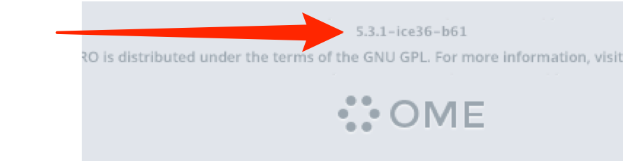

These pages contain the User Help for applications which can connect to an OMERO server or use OMERO plugins.
The User Guides for the current versions are listed in the main menu, for all OMERO applications, including OMERO.insight, OMERO.web, OMERO.figure and OMERO in ImageJ and Fiji.
Guides for Previous Versions are available from the downloads archive.
The Training Course Material page contains links to material for adapting for use in training sessions including Omnigraffle® and Word® files.
The current release version of OMERO.insight is 5.4.2. You can tell what version of OMERO you are using by looking at the login screen, or selecting About OMERO.insight from the Help menu in OMERO.insight.

All material is covered by the Creative Commons Attribution 4.0 Unported License - you are free to share or adapt content as long as you credit the Open Microscopy Environment. The exception to this is the screenshots and videos which can only be used for non-commercial purposes.
Restricted Administrators - a new configurable user role to allow facility managers, image analysts or other trusted users to act on behalf of all users for certain tasks.
OMERO.iviewer - the Full Viewer in OMERO.web has been completely revamped as a WebApp using new technologies, allowing you to draw ROIs in OMERO.web, and much more.